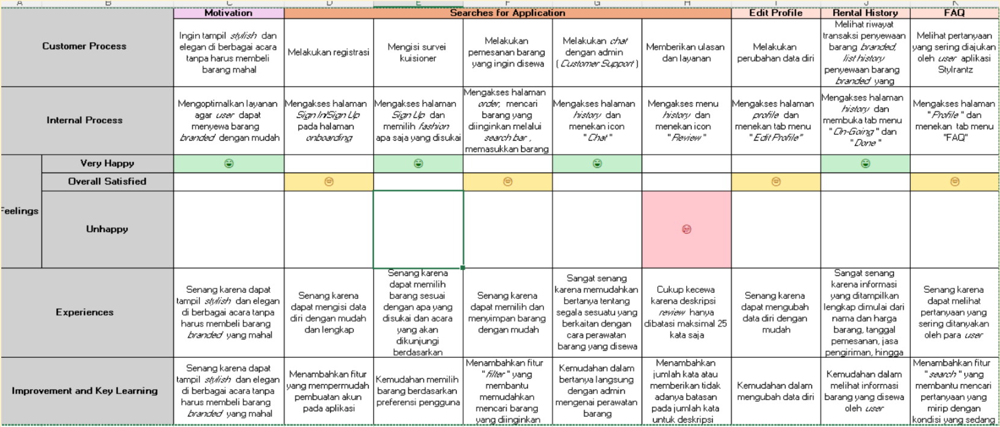
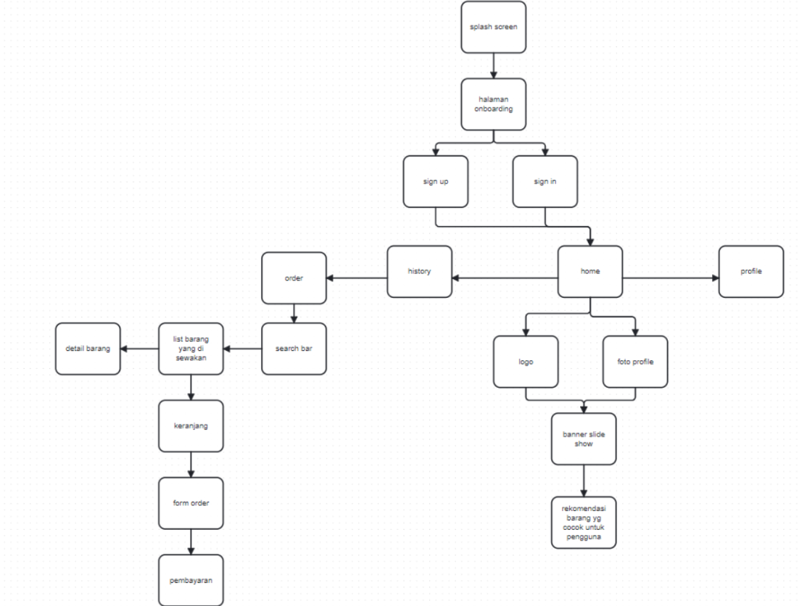
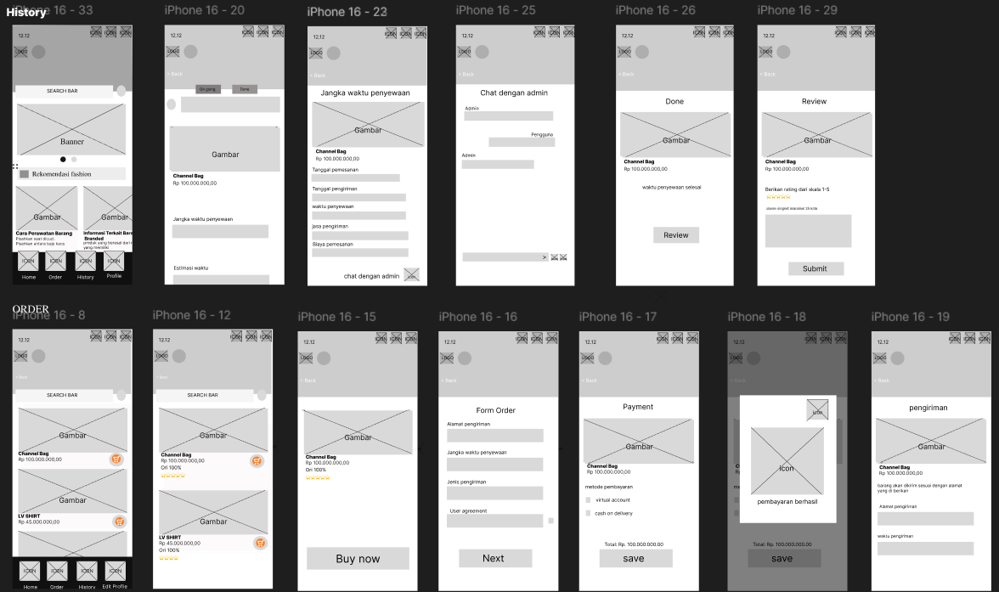
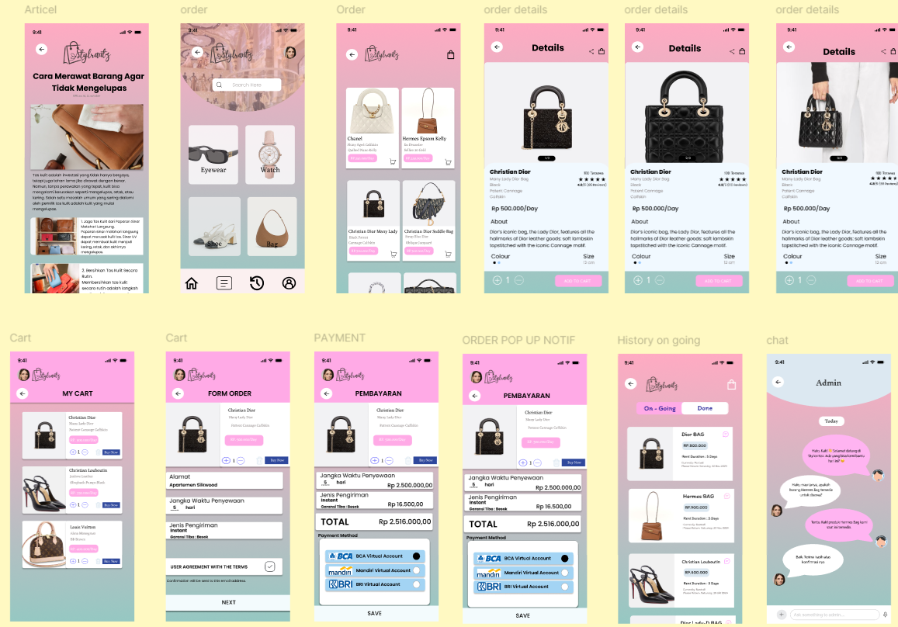

Stylrantz: Luxury Fashion Rental & AI Styling App
An end-to-end mobile application solution designed to help users look stylish and elegant at various events without needing to purchase expensive clothing items.
Role
UI/UX Designer
Scope
Research & Wireframing
Tools
Figma, Miro
Platform
Mobile App (iOS/Android)
1. User Journey Map
Analyzing user touchpoints, feelings, motivations, and key improvements throughout the rental experience.

2. Navigation Map
Mapping out the overall application structure, screen hierarchy, and navigational pathways.

3. Wireframes (Low-Fi & Structure)
Translating user flows into structural layouts from sign-in, store, catalog, cart, to profile management.

4. High-Fidelity UI & Interactive Prototype
The final visual design implementation incorporating typography, color palette, design system, and interactive components.

Explore the fully interactive prototype directly in Figma to experience the app flow and high-fidelity screens.
View Figma Prototype ↗